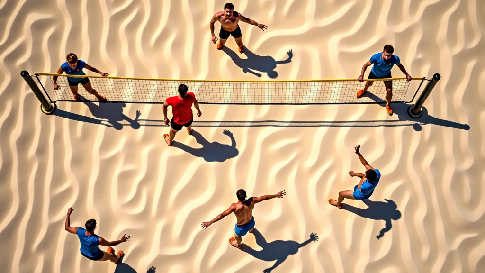

الإشارات الأساسية للمبتدئين
الإشارات الخمس الأساسية التي يحتاج كل لاعب جديد إلى تعلمها قبل الدخول إلى الملعب. بسيطة وسهلة التذكر.
اقرأ المزيدتعلم لغة الإشارات التي تربط اللاعبين معاً على الرمل
اطّلع على مجموعتنا الشاملة من الإشارات الأساسية والمتقدمة مع شروحات عملية.
اكتشف المحتوىكل ما تحتاج لإتقان التواصل على الملعب
تعلم الإشارات الخمس الأساسية التي تشكل أساس التواصل بين اللاعبين. بسيطة وسهلة التذكر، لكنها قوية جداً في الملعب.
اكتشف كيف يستخدم الفريق الدفاعي الإشارات للتنسيق وتغطية المناطق. هذه الإشارات تمنع التضارب وتحسن الأداء الجماعي.
انتقل إلى مستوى أعلى مع الإشارات التكتيكية المعقدة. تُستخدم في المباريات الاحترافية لتغيير الخطط بسرعة البرق.
تمارين وحالات واقعية لتطبيق ما تعلمته. نحن نركز على الممارسة لأن الإشارات تحتاج إلى تدريب مستمر.
الكرة الطائرة الشاطئية لعبة سريعة جداً. لا وقت للنقاش الطويل بين اللاعبين. الإشارات هي اللغة التي تربط الفريق معاً في لحظات حاسمة.
سواء كنت مبتدئاً تحاول فهم الأساسيات، أو لاعباً متقدماً تسعى للاحترافية، فإن إتقان هذه الإشارات سيحسّن أدائك بشكل ملحوظ.
كل إشارة لها معنى واحد واضح
تواصل فوري دون تأخير
ربط الفريق بلغة موحدة
تحسين التنسيق بين أفراد الفريق بشكل ملموس
اتخاذ قرارات دفاعية أسرع وأكثر كفاءة
تقليل الأخطاء الناتجة عن سوء الفهم
بناء ثقة أقوى مع زملائك في الملعب
الاستعداد للمباريات الرسمية والبطولات
الارتقاء إلى مستويات أعلى من اللعب
إشارات اليد
التواصل الجماعي
التكتيكات الدفاعية
الاستراتيجية
التدريب العملي
الممارسات المتقدمة

اقرأ أحدث الدروس والشروحات التفصيلية
الإشارات الخمس الأساسية التي يحتاج كل لاعب جديد إلى تعلمها قبل الدخول إلى الملعب. بسيطة وسهلة التذكر.
اقرأ المزيد
كيفية استخدام الإشارات للتنسيق بين الدفاعين. تعلم كيف تغطي مناطقك وتحمي شريكك من الضربات القوية.
اقرأ المزيد
إشارات معقدة تستخدمها الفرق المتقدمة للتنسيق بين الهجوم والدفاع. تتضمن تغييرات تكتيكية سريعة وردود أفعال متقدمة.
اقرأ المزيدنستخدم ملفات تعريف الارتباط لتحسين تجربتك. بمتابعة التصفح، فإنك توافق على استخدامنا لها.